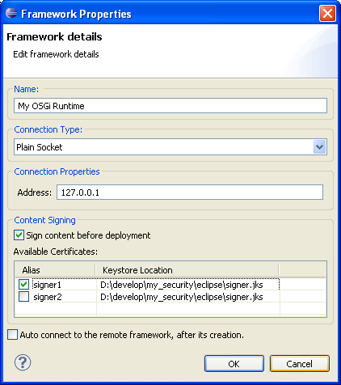

Adding/Removing an OSGi Runtime
Adding an OSGi Runtime
To add an OSGi Runtime to the list of the Frameworks view:
- Click the
 button from the view's toolbar. The Framework Properties dialog appears prompting you to specify the connection properties of the OSGi framework.
button from the view's toolbar. The Framework Properties dialog appears prompting you to specify the connection properties of the OSGi framework.
- From Connection Type select Plain Socket.
- Fill in the connection settings for the framework:
- IP Address - You have to provide the friendly name of the framework and the IP address of its host.
- Automatic signing upon install - If you want to have bundles and deployment packages automatically signed when installed on this OSGi framework:
- Add signer settings such as keystores and aliases within them under the Certificates section of the mToolkit preference page (Window > Preferences > mToolkit).
- Check the Sign content before deployment box.
- In the Available Certificates list select those signers from mToolkit certificate preferences which are needed for this OSGi framework.
- Connect automatically after completing the framework registration in Eclipse - Select Auto connect to the remote framework after its creation. mToolkit will try to connect the framework after you click the OK button.

Figure 1: Setting up connection properties for an OSGi Runtime
- Select OK to complete adding the OSGi framework.
Removing an OSGi Runtime
To remove an OSGi Runtime from the frameworks list, and select the framework node and click the  button from the view's toolbar.
button from the view's toolbar.

OSGi Management Overview
OSGi Frameworks Tree
Remote Console

Adding/Removing an OSGi Runtime
Configuring the Properties of an OSGi Runtime
Connecting to/Disconnecting from an OSGi Runtime
Managing Bundles
Managing Applications
Using the Remote ConsoleCustomizing OSGi Management
Opening the Web Admin Console inside Eclipse
OSGi Management Troubleshooting

Frameworks View
Frameworks View Tree Icons
Frameworks View Menus and Toolbar